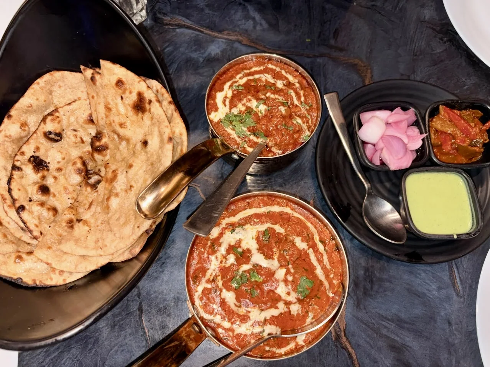

Kitchen pick
Paneer Butter
Masala
Soft paneer in a velvety tomato gravy, finished with crushed fenugreek and a swirl of cream.
View recipe
Regional cookbook
Soft paneer in a velvety tomato gravy, finished with crushed fenugreek and a swirl of cream.
View recipe